Installation of Eclipse template for service development
This page contains the necessary instructions to install an Eclipse template for developing a factory abstractService. It also contains an overview of everything given in this template. It assume that you have already installed a correct development environment, as described in the appropriate documentation. If this is not the case, then you need first to follow the given instruction before proceeding to this page.
Installing the template
To install the template, you need to get the template from git inside the eclipse workspace folder, and to import the project in eclipse
- Go to the folder that you specified as the Eclipse workspace, the first time you run Ecplise. In this folder, create a new folder, called "funkyfactory": cd < insert the path to your workspace folder here > mkdir funkyfactory
- Go in this newly created folder, and get the template from git with the following command: cd funkyfactory git clone git://github.com/funkyChris/funkyfactory-service-clock.git This will create a new "funkyfactory-service-clock" folder inside the "funkufactory" folder.
- Launch Eclipse, and in the "File" menu, select the "Import..." menu item: 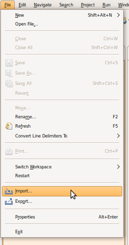
- Open the "Maven" section, and choose "Existing Maven Projects": 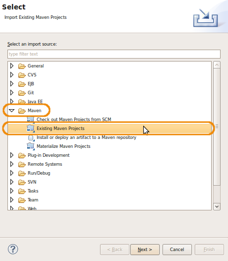
- Click on the "Browse" button to navigate to the "funkyfactory" folder you created earlier, (but don't click "OK" yet!): 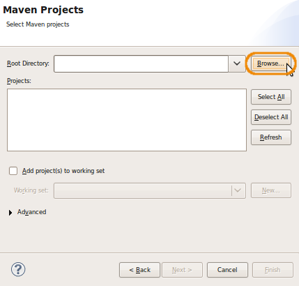
- In the "funkyfactory" folder, go in the "funkyfactory-service-clock" folder (created for you by git). In it, select the "funkyfactory-service-clock" folder, and click the "OK" button: 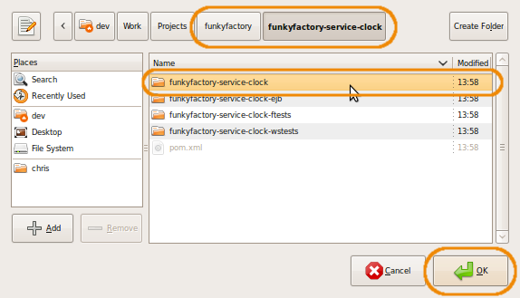
- Eclipse should find the pom file of the project. You can then click on the "Finish" button: 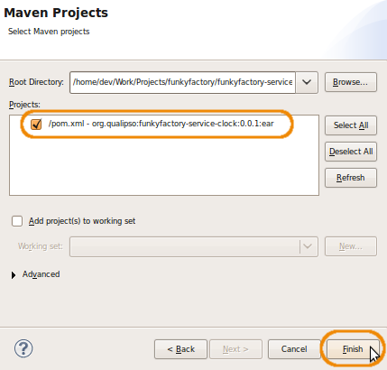
-
Eclipse will import the maven project, and try to resolve all maven dependencies as defined in the pom.xml file. It will download all necessary jar files in your ".m2" folder, at the root of your home directory. However, it won't succeed to download all dependencies, as some are to other funkyfactory maven project that we still have to import.
So repeat the last 5 steps ("File" -> "Import" ; "Maven" -> "Existing Maven Projects" ; "Browse") for the 3 remaining maven projects, inside the "funkyfactory/funkyfactory-service-clock" folder:
- funkyfactory-service-clock-ejb
- funkyfactory-service-clock-ftests
- funkyfactory-service-clock-wstests
Once you imported the 4 maven project, you should have something like this in Eclipse:

Template content
The template contains 4 projects, each with its own specific role:
- funkyfactory-service-clock-ejb
- The service itself. It contains all the sources and configuration files necessary for the service, and its build result is an EJB jar.
- funkyfactory-service-clock
- Package the EJB jar inside an EAR container. It contains only configuration files necessary for the creation of the EAR.
- funkyfactory-service-clock-ftests
- Functionnal tests for the service.
- funkyfactory-service-clock-wstests
- Tests the webservice SOAP access to the service.
funkyfactory-service-clock-ejb
This is the main project, for developing the service itself. It containts 4 area of interests: 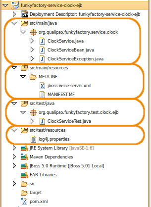
- src/main/java
- Contains the main sources of the service. There is at least one package with 3 sources in it:
- "MyServiceName"Service.java (here, ClockService.java), the interface to the service, extending "FactoryService"
- "MyServiceName"ServiceBean.java (here, ClockServiceBean.java), the implementation of the service as an EJB3 bean
- "MyServiceName"ServiceException.java (here, ClockServiceException.java), the specific exception that can be launched by the service.
- src/main/resources
- Contains the configuration files for the service. Here, contains the "jboss-wsse-server.xml" file that defines the authentication policy for accessing the service through its webservice interface.
- src/test/java
- Contains the unit tests of the service, launched each time the project is packaged (mvn package) or directly with "mvn test".
- src/test/resources
- Contains the configuration files for the unit tests, that is, here the level of log shown during the test (log4j.properties).
To compile the project, do a right-click on the project root folder ("funkyfactory-service-clock-ejb"), and in the contextual menu, select "Run As" -> "Maven package": 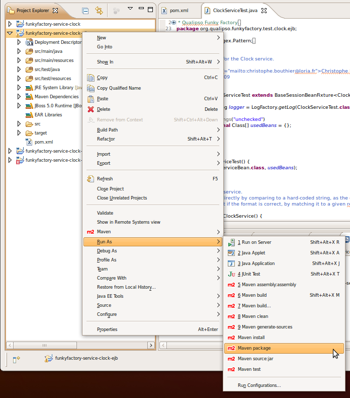 This will compile the java classes, run the unit tests, and create the necessary jar file. If there's any problem in one phase, for example a compiler error or the failure of a test, then the jar is not build, and the error message appears in the Eclipse console view.
When the package build correctly, you can deploy the jar directly in your local maven repository (the ".m2" folder at the root of your home directory) by selecting, in the same contextual menu, "Run As" -> "Maven install":
 This step is necessary in order for the funkyfactory-service-clock project to build the EAR, as it use maven dependency to find this project's ejb jar.
If you want, you can check that maven has correctly published the ejb jar in the folder "~/.m2/repository/org/qualipso/funkyfactory-service-clock-ejb/0.0.1":
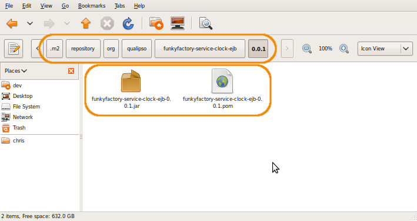
The version number ("0.0.1") is defined directly in the pom.xml file, and should be incremented with each new version.
This step is necessary in order for the funkyfactory-service-clock project to build the EAR, as it use maven dependency to find this project's ejb jar.
If you want, you can check that maven has correctly published the ejb jar in the folder "~/.m2/repository/org/qualipso/funkyfactory-service-clock-ejb/0.0.1":
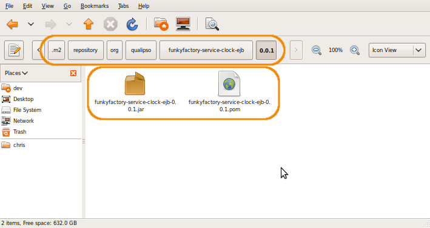
The version number ("0.0.1") is defined directly in the pom.xml file, and should be incremented with each new version.
funkyfactory-service-clock
The unique goal of this project is to package the EJB jar of the funkyfactory-service-clock-ejb in a deployable ear. The project contains nothing as everything is defined in its pom.xml file.
funkyfactory-service-clock-ftests
The goal of this project is to do the functionnal tests of the service, accessing the service through its RMI interfaces. In order to do such tests, it is thus necessary that the service is already deployed on the JBoss server. That's why the project is separated from the ejb project. 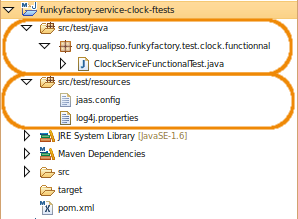
funkyfactory-service-clock-wstests
The goal of this project is to test the webservice SOAP interface of the service. In order to do such tests, it is necessary that the service is already deployed on the JBoss server. That's why the project is separated from the ejb project. 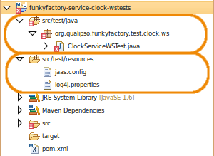